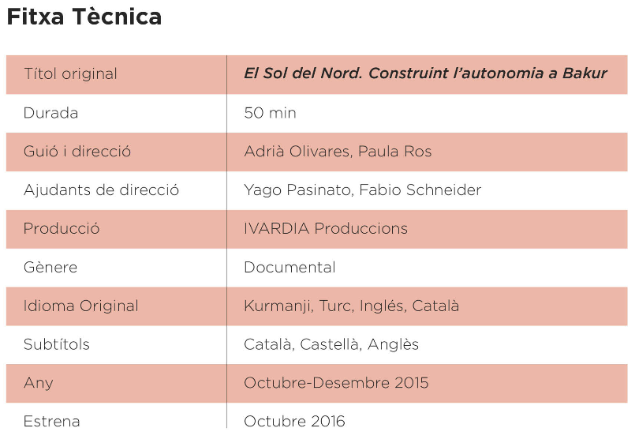

El nostre projecte, un viatge a Bakur
El 19 d’octubre de 2015 vam decidir viatjar al Kurdistan amb unes motxilles plenes de càmeres, micros, llibretes, pors i esperances. Feia mesos que gestàvem la idea. D’ençà que havíem descobert el moviment kurd seguíem amb interès i admiració tant la seva resistència com la seva proposta política: un sistema basat en el municipalisme, l’ecologia social i l’alliberament de la dona, tot això alimentat per un poble lluitador, crític i solidari.Vam decidir començar el viatge a Turquia amb la intenció d’arribar a Rojava, Síria, on centren la mirada moviments revolucionaris d’arreu del món. La nostra primera parada, encara dins les fronteres de l’Estat turc, va ser a Diyarbakir. El seu nom en kurd és Amed i és la capital del Kurdistan. És allà on es va començar a gestar el documental, ja que vam trobar persones amb ganes d’explicar-nos que a Bakur també estaven vivint un procés revolucionari i que, a més, patien la repressió de l’Estat turc que vigila, castiga, deté i mata per tal d’aturar el projecte kurd. Però de moment, i malgrat les darreres matances, no ho ha aconseguit.
Bakur ens va atrapar durant dos mesos frenètics de trobades, reflexions i descobriments que vam poder enregistrar amb la nostra càmera. Els habitants de Bakur, la majoria kurds, però també turcs, ens van obrir les portes de casa seva, ens van cedir el seu temps, ens van donar amor i ens van omplir d’esperança i lluita. Per això, en tornar del nostre viatge vam sentir la responsabilitat de fer arribar les seves veus a casa nostra i, així, poder entendre i aprendre de la seva revolució. Aquest documental és això. Un parèntesi a les nostres vides. Un regal del poble kurd. Un crit ple de ràbia, lluita i bellesa revolucionària.

 Verkami
Verkami
 Teaser
Teaser